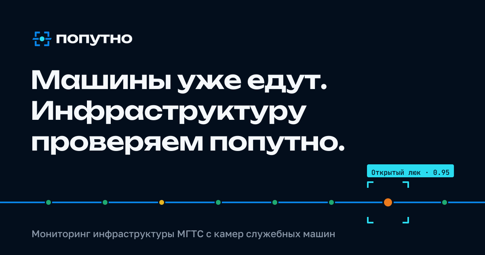

MH-0142
Открытый люк
- Адрес
- ул. Авиамоторная, 8
- Проезд
- 26.11 10:42
- Уверенность
- 0.95
Основа бренда «Попутно»: токены, компоненты, знак и иконки. Брендбук, дека и сайт берут цвета, шрифты и формы только отсюда: tokens.css и components.css.
Рамка обнаружения: четыре уголка вокруг объекта, через рамку проходит линия маршрута. Машина едет мимо и попутно отмечает люк или опору.
Цветной знак на navy и на светлом. На синем и на фото только одноцветный белый. Охранное поле = плечо уголка (17 из 64, около четверти высоты знака).
Полный знак от 24 px, логотип от 96 px по ширине. В 16 px работает только фавикон: уголки толще, точка крупнее, линии маршрута нет.
1200 × 630, текст переведён в кривые. Маршрут с объектами по пути, один в рамке детекции.

Бренд холодный: navy, синий signal и редкий циан scan. Тёплые цвета означают только состояние объекта. Компоненты берут смысловые токены, палитра остаётся сырьём.
Опорный шаг отмечен полосой снизу. Имена: --p-{оттенок}-{шаг}.
Значения и контраст пересчитываются для текущей темы. Контраст считается к --surface-raised, статусный текст к своей подложке. Порог для текста 4.5.
У каждого статуса своя иконка и слово: цвет не единственный носитель. «Не наблюдается» обведён пунктиром и не путается с нормой.
Серый для всего и один акцент signal для того, о чём говорим. Статусные цвета только там, где столбик и есть статус.
Unbounded для обложек, заголовков разделов, KPI и логотипа, только от 20 px. Golos Text для интерфейса и текста. JetBrains Mono для ID, координат, уверенности и времени. Цифры табличные.
Шаг 4. Радиусы сдержанные, как у прибора. Поверхности плоские, между ними линия 1 px; тень только у того, что плавает.
Ответ на клик короче 300 мс, выход короче входа, ease-in в интерфейсе нет. При «меньше движения» сдвиги и масштаб обнуляются, длинные анимации становятся мгновенными. Наведите, чтобы проиграть.
press 140 · release 110 · fast 160 · base 200 · panel 260 · slow 320 · mark 900 · stagger 40 · press-scale 0.97 · snap-scale 1.15
Один набор: сетка 24, штрих 1.75, круглые концы, цвет через currentColor. Спрайт icons.svg, по одной в icons/.
Только токены, префикс pp-. Адреса и ID в образцах взяты как пример формата; количества, которых пока нет, помечены [ДАННЫЕ].
Основная одна на экран. Нажатие сжимает до 0.97, фокус рисует кольцо (циан на тёмном, синий на светлом), загрузка держит ширину.
| Обычная | Наведение | Нажатие | Фокус | Загрузка | Неактивна |
|---|
Уголки вокруг найденного объекта и бирка «что · уверенность». Циан: модель видит объект. Оранжевый: найден дефект. Рамка лежит на снимке, поэтому одинакова в обеих темах.
Иллюстрация вместо снимка. В продукте под рамкой реальный кадр камеры.
Система подсказывает, решает человек. Находку модели видно по уголкам, решение человека по сплошной плашке.
Плотная, строка 44 px (36 в режиме --dense). ID моноширинным, числа выровнены вправо и табличные.
| ID | Объект | Адрес | Статус | Уверенность | Проезд |
|---|---|---|---|---|---|
| MH-0142 | Колодец | ул. Авиамоторная, 8 | Критично | 0.95 | 26.11 10:42 |
| POLE-0037 | Опора | шоссе Энтузиастов, 21 | Дефект | 0.81 | 26.11 10:51 |
| MH-0157 | Колодец | ул. Лефортовский Вал, 3 | Проверить | 0.58 | 26.11 11:03 |
| POLE-0041 | Опора | ул. Золоторожский Вал, 11 | Не наблюдается | нет данных | 26.11 11:09 |
| MH-0163 | Колодец | ул. Авиамоторная, 12 | Норма | 0.97 | 26.11 11:12 |
Тонкая линия маршрута работает разделителем, прогрессом и таймлайном. Узлы окрашены статусом объекта на этом проезде.
Кадры последнего выезда разобраны. Новые появятся после следующего проезда.